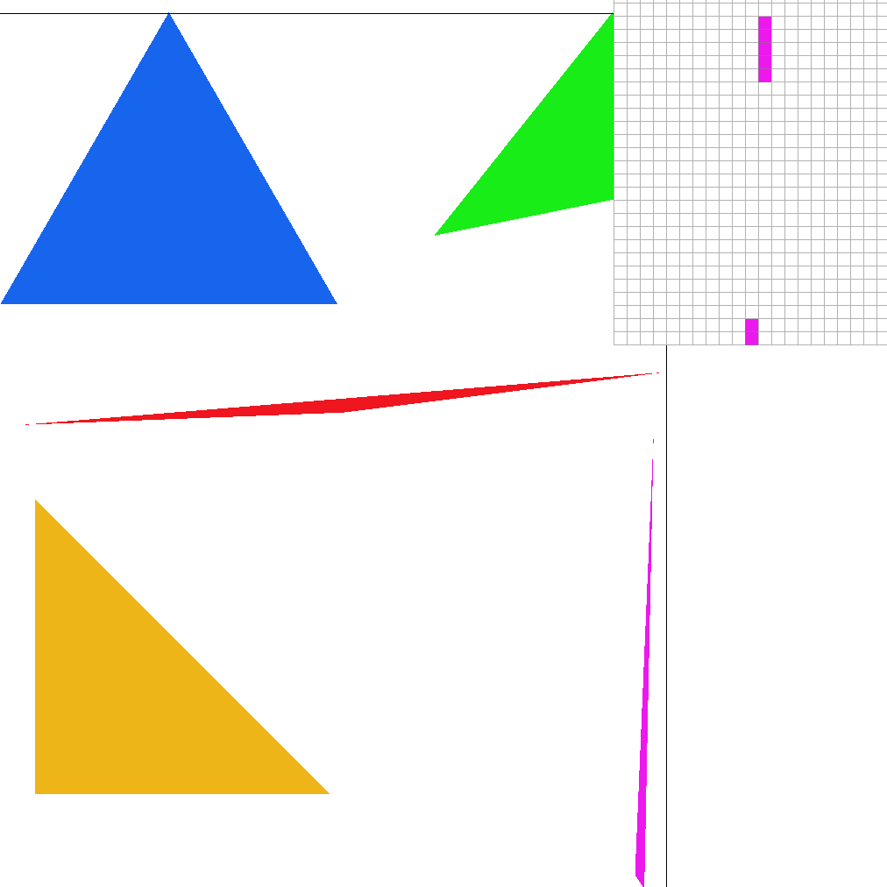
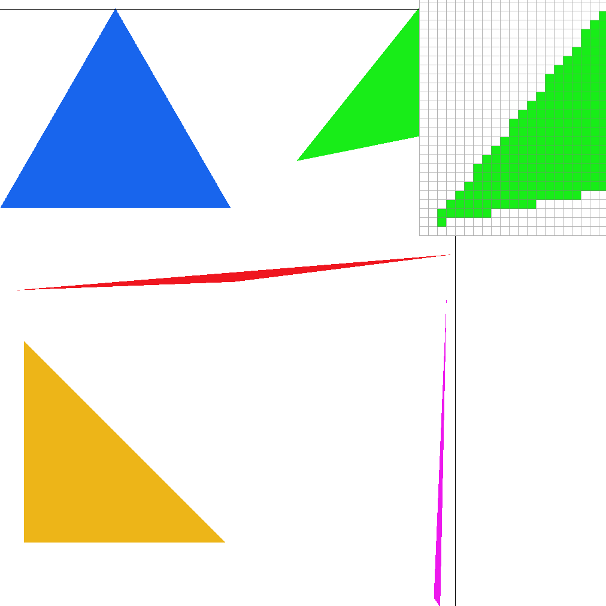
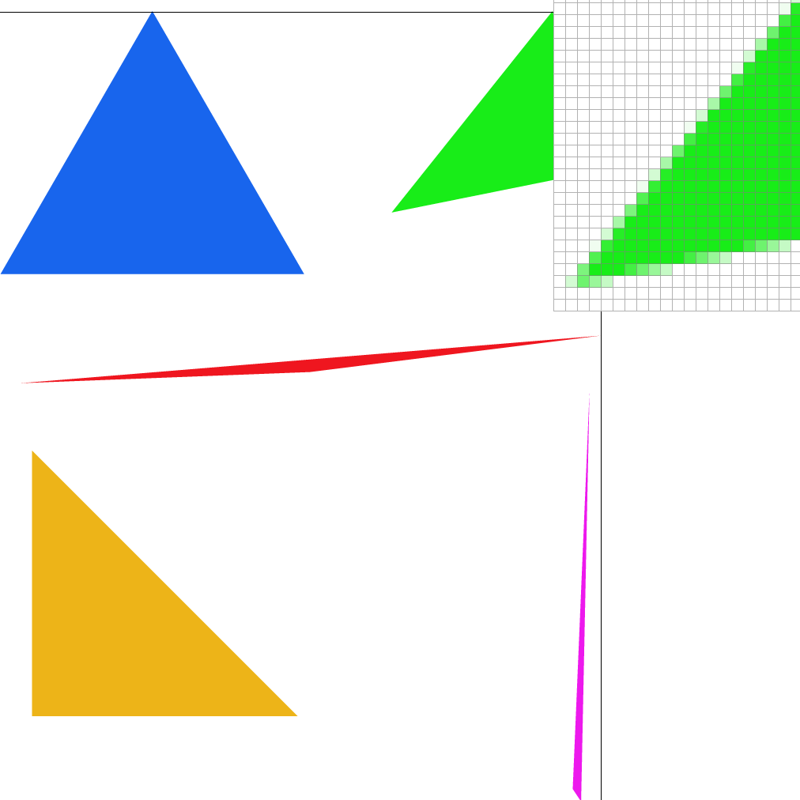
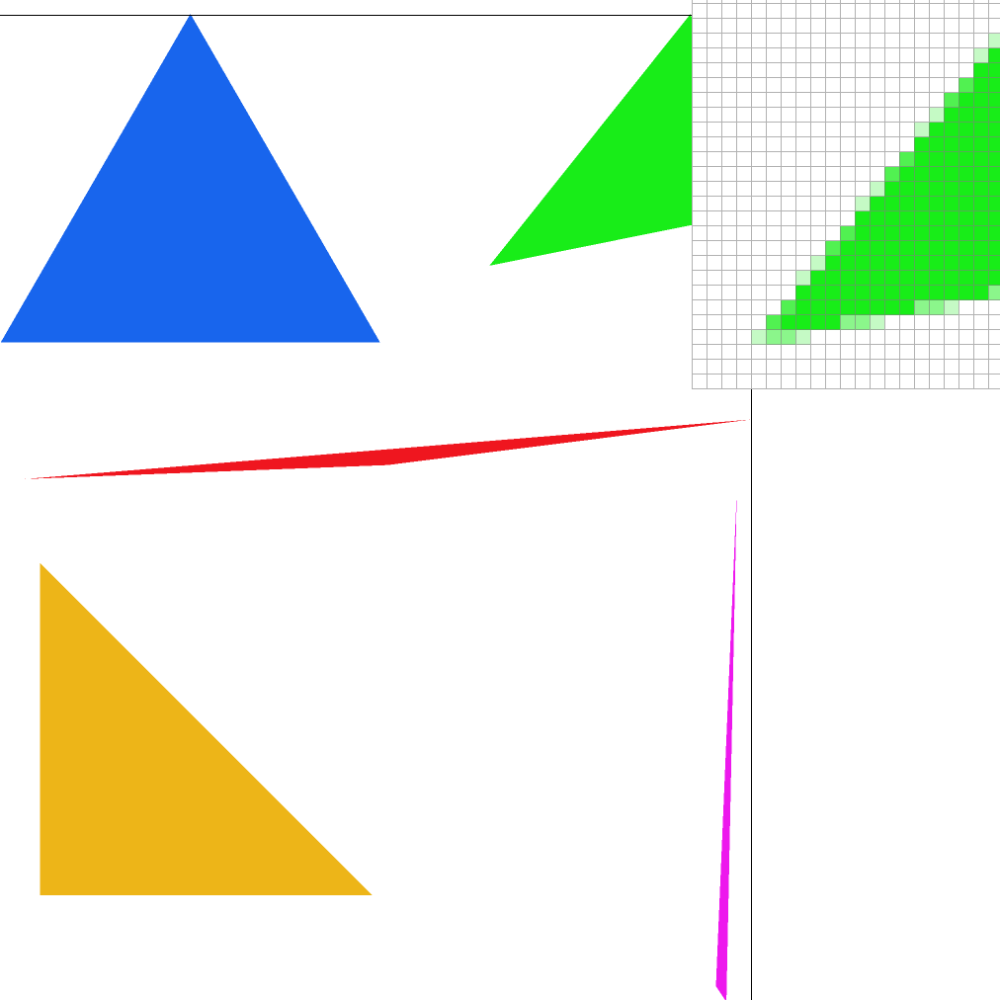
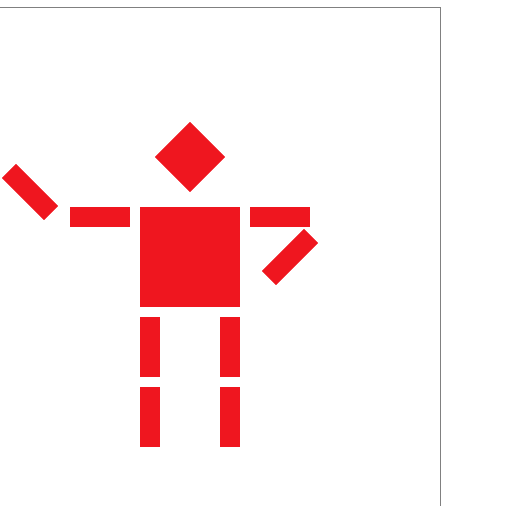
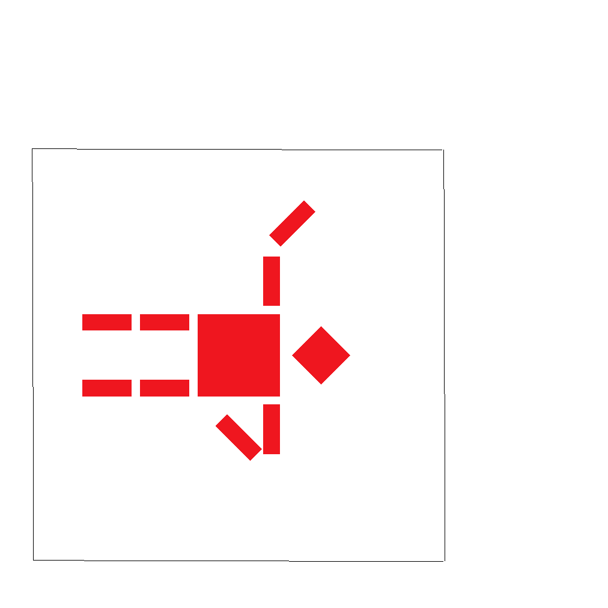
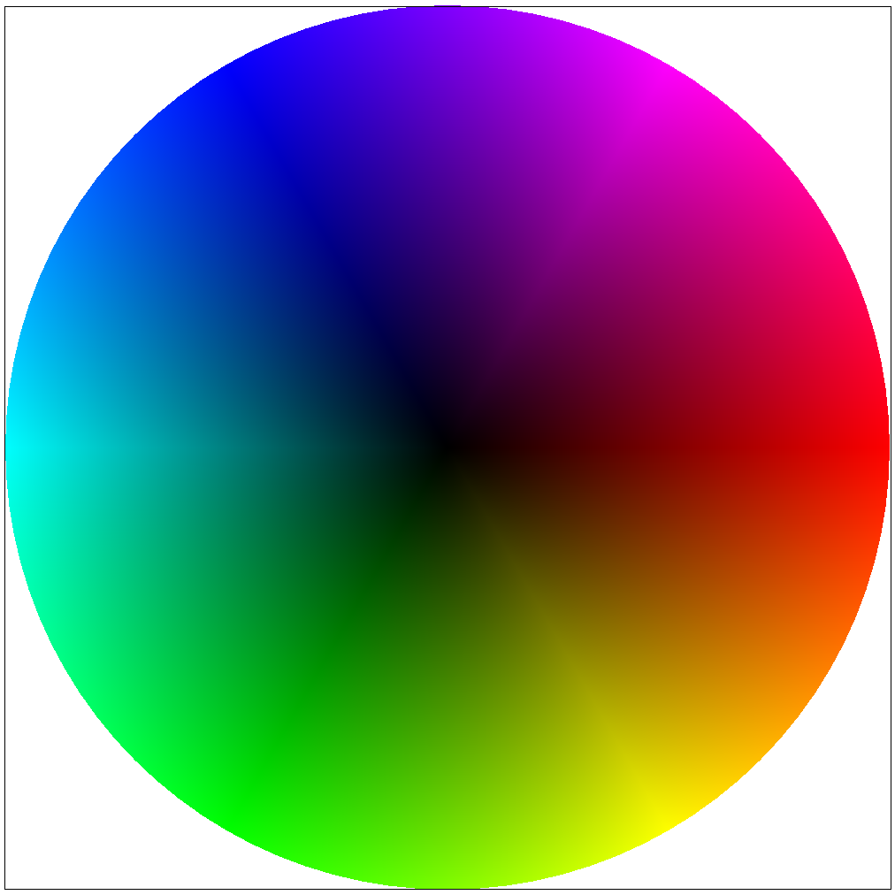
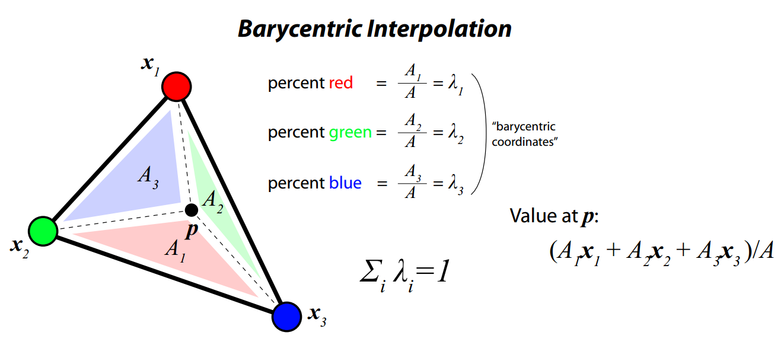

Project 1: Rasterizer
CS 284a Computer graphics & Imaging
2022 Spring Kaleab Belete, Xinwei Zhuang Webpage: https://cal-cs184-student.github.io/sp22-project-webpages-xinwei-zhuang/proj1/index.htmlPart 1: Drawing Single-Color Triangles
Walk through how you rasterize triangles in your own words.The basic steps for this part are:
1) Get truncated lower and upper bounds for looping through the image first using min or max functions on the set of xs and ys then using 0 for the lower bound, and hight/width for the upper bound.
2) make a line test lambda function to check if a point (p0,p1) falls withn a given triangle
3) loop through bounds and fill in points with the appropriate color in the appropriate position if they pass the line test
Explain how your algorithm is no worse than one that checks each sample within the bounding box of the triangle.
We only visit each point once and use truncated bounds so it is better than checking every point.
Show a png screenshot of basic/test4.svg with the default viewing parameters and with the pixel inspector centered on an interesting part of the scene.

As explained above we use truncated bounds and with the truncated bounds we are able to get a time of:
| With | Without |
|---|---|
| It took 913 clicks or (0.000913 seconds). | It took 12991 clicks or (0.012991 seconds). |
| It took 492 clicks or (0.000492 seconds). | It took 12986 clicks or (0.012986 seconds). |
| It took 331 clicks or (0.000331 seconds). | It took 12318 clicks or (0.012318 seconds). |
| It took 802 clicks or (0.000802 seconds). | It took 12372 clicks or (0.012372 seconds). |
| It took 87 clicks or (0.000087 seconds). | It took 12238 clicks or (0.012238 seconds). |
Part 2: Antialiasing by Supersampling
Walk through your supersampling algorithm and data structures. Why is supersampling useful? What modifications did you make to the rasterization pipeline in the process? Explain how you used supersampling to antialias your triangles.Given a sample rate x the basic steps for this part are:
1) We have a sample buffer which is a list of colors that we will resize beased on the the image size and sample rate
2) the rasterization of triangles is done in like in part 1 with an added set of inner nested loops to handel assigning the colors to the resized frame buffer
3) the color sampling is managed in the resolve to framebuffer method with a new innerloop that traverses in the range (1,sqrt(x)*(sqrt(x)) accumulating color values
Supersampling is useful in things like antialising because it can take context (near by pixals) into account when rendering an image which helps with continuity and reduces the jaggies that zoomed in pictures have.
Supersampling acts as a low pass filter antialising pictures and removing jaggies/sharp eges that are a result of a high frequancy input.
Show png screenshots of basic/test4.svg with the default viewing parameters and sample rates 1, 4, and 16 to compare them side-by-side. Position the pixel inspector over an area that showcases the effect dramatically; for example, a very skinny triangle corner. Explain why these results are observed.
The edges of the triangle account for the fact that they are next while empty space and slowly smoothen out as we increase the samle rate becoming lighter in tone and melting into the picture to remove the harsh effect posed by the jaggies in the lower sample rates.



Part 3: Transforms
Create an updated version of svg/transforms/robot.svg with cubeman doing something more interesting, like waving or running. Feel free to change his colors or proportions to suit your creativity. Save your svg file as my_robot.svg in your docs/ directory and show a png screenshot of your rendered drawing in your write-up. Explain what you were trying to do with cubeman in words.The robot is waving and holding its hip, this was done with simple rotations and repositioning of the arms. See pictures below.
Extra credit
Pressing '.' will rotate the view in the GUI. See rotated robot below.


Part 4: Barycentric coordinates
Pixel sampling
Explain barycentric coordinates in your own words and use an image to aid you in your explanation. One idea is to use a svg file that plots a single triangle with one red, one green, and one blue vertex, which should produce a smoothly blended color triangle.Using barycentric coordinates means that values are determined by their relative distance of a point to each of the given vertices, as you can see in the image below we can break a triangle based on the position of a given point.
Show a png screenshot of svg/basic/test7.svg with default viewing parameters and sample rate 1. If you make any additional images with color gradients, include them.


Part 5 "Pixel sampling" for texture mapping
Pixel sampling
Explain pixel sampling in your own words and describe how you implemented it to perform texture mapping. Briefly discuss the two different pixel sampling methods, nearest and bilinear.Pixel sampling is to find the pixel colour from the texel space to draw on a pixel space. It can be divided into 1:1 mapping (the ideal case), upsampling and downsampling. For magnification and minification, we implement interpolation functions to fill up the pixel space.
Nearest sampling
We first find the nearest mipmap level, then the nearest texel center is sampled to get the pixel color. Using mipmapping can improve texture memory but this cannot avoid box-like artifacts in texture magnification.
Bilinear sampling
We implement linear interpolation function (lerp) three times to find the interpolated colour of a pixel. The pixel colour depends on the four nearest texels to the pixel. This provides a more smooth interpolation compared to nearest interpolation but still can behave some artifacts.
Results
Check out the svg files in the svg/texmap/ directory. Use the pixel inspector to find a good example of where bilinear sampling clearly defeats nearest sampling. Show and compare four png screenshots using nearest sampling at 1 sample per pixel, nearest sampling at 16 samples per pixel, bilinear sampling at 1 sample per pixel, and bilinear sampling at 16 samples per pixel.


Difference
Comment on the relative differences. Discuss when there will be a large difference between the two methods and why.For the svg sampled at one sample per pixel rate, both nearest sampling and bilinear sampling behaves a box-like artifacts, but the bilinear sampling is smoother. For the 16 samples per pixel, both sampling stretegies is smoother compared to the 1 sample per pixel case, and there is hardly visual artifacts for the textured image. However, a closer look at the pixel inspector, we can still see that the bilinear sampling behaves better.
The region in texture with uniform colour is not affected much from the sampling mechanism, the region with high frequencies is mostly affected by the sampling size and function.
Part 6 "Level sampling" with mipmaps for texture mapping
Level sampling
Explain level sampling in your own words and describe how you implemented it for texture mapping.For a complex scene, we may need different resolution of texture with a higher resolution in the objects near us, and a low resolution for faraway objects. If we apply uniform texture sampling, it will either cause blur (for near objects) or aliasing (for farther objects) or both.
Using level sampling, with a reduced level of detail for farther objects with a lower sample rate, can avoid the forementioned problem. To achieve this, for each barycentric coordinates, we compute the level of detail (D) the pixel required.
Tradeoffs
You can now adjust your sampling technique by selecting pixel sampling, level sampling, or the number of samples per pixel. Describe the tradeoffs between speed, memory usage, and antialiasing power between the three various techniques.For total of 6 combinations of the texture filtering algorithm, the quickest combination is nearest + level 0, which renders a huge aliasing. Bilinear interpolation + linear interpolation for mipmap level sampling renders the best image. It takes much longer to compute because we need to find the derivatives three times for one pixel to get the level of mipmap. The nearest level of mipmap can cause blur but also a smooth in texture mapping. Bilinear sample also remove the box artifacts compared with nearest sample.
Speed: L_0>L_nearest, P_nearest>P_linear.
Memory use: L_nearest>L_0 because need to store mipmap.
Antialiasing power: L_nearest>L_0, P_linear>P_nearest.
Results
Using a png file you find yourself, show us four versions of the image, using the combinations of L_ZERO and P_NEAREST, L_ZERO and P_LINEAR, L_NEAREST and P_NEAREST, as well as L_NEAREST and P_LINEAR.


Extra credit
Extra credit: If you implemented any extra filtering methods, describe them and show comparisons between your results with the other above methods.NA.